教程 5：关节增益调节#
最大力矩和速度已设置完成。现在调节每个关节对新位置目标的响应方式。刚度和阻尼构成比例-微分（PD）控制器：刚度将关节拉向目标位置，而阻尼抵抗速度以减少振荡。使用 Gain Tuner（增益调节器）来调节拇指关节的这些值，并通过其图表评估响应效果。
学习目标#
在本教程中，您将：
使用 Gain Tuner（增益调节器）调节拇指驱动的刚度和阻尼。
运行 Step Function（阶跃函数）、Snap to Limits（吸附至极限）和 Stress（应力）测试。
解读欠阻尼、临界阻尼和过阻尼的关节响应。
将调节后的增益保存到物理层。
先决条件#
完成 教程 4：关节驱动调节。
打开
Isaac/Samples/Rigging/Inspire/module_4_end/inspire_hand/inspire_hand.usda。
理解刚度和阻尼#
Isaac Sim 中的位置控制使用以下关系：
力 = (刚度 × 位置偏差) + (阻尼 × 速度偏差)
刚度 的作用类似于弹簧。刚度越高，关节被拉向目标位置的力越强。
阻尼 的作用类似于减震器。阻尼越高，振荡和过冲越小。
刚度与阻尼的比值决定了对位置阶跃输入的响应：
状态 |
行为 |
原因 |
|---|---|---|
欠阻尼 |
关节在稳定之前会超调并振荡。 |
刚度相对于阻尼较高。 |
临界阻尼 |
关节快速到达目标位置且无超调。 |
刚度与阻尼平衡。 |
过阻尼 |
关节缓慢接近目标位置且无超调。 |
阻尼相对于刚度较高。 |
如果位置图表显示振荡或超调，请增加阻尼或降低刚度。如果关节缓慢爬向目标，请增加刚度或降低阻尼。力求实现接近临界阻尼的响应。
打开 Gain Tuner#
前往 Tools > Robotics > Asset Editors > Gain Tuner。

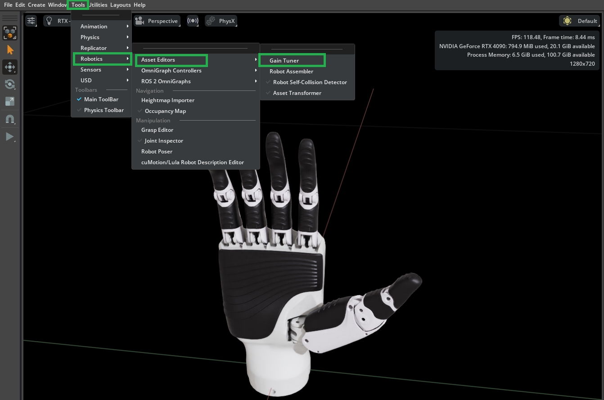
该面板有两个选项卡，本教程将在它们之间切换：
Gain Settings 包含每个关节的增益表，用于编辑刚度和阻尼，以及 Save Target 行。
Test Gains 包含 Test Gains Settings、Run Test 按钮以及结果图表。
Gain Tuner 始终在 Gain Settings 选项卡打开，因此当步骤需要测试控件时，请单击 Test Gains。
注意
module_4_end 检查点已经配置了手指关节的刚度和阻尼。本教程将调整并验证 right_thumb_1_joint 和 right_thumb_2_joint。
调整指南#
将阻尼设为零，并调整刚度以观察初始响应。
增加刚度，直到关节收敛至目标附近。
将阻尼设置为比刚度低约一个数量级的值作为起点。
微调这两个值，以平衡稳定性、响应时间和超调量。
运行阶跃函数测试#
在 Gain Settings 选项卡中，在 Stiffness / Kp 列中，为
right_thumb_1_joint和right_thumb_2_joint设置初始值 0.001。列标题还标明了当前活动后端使用的单位：PhysX 下为度，Newton 下为弧度。

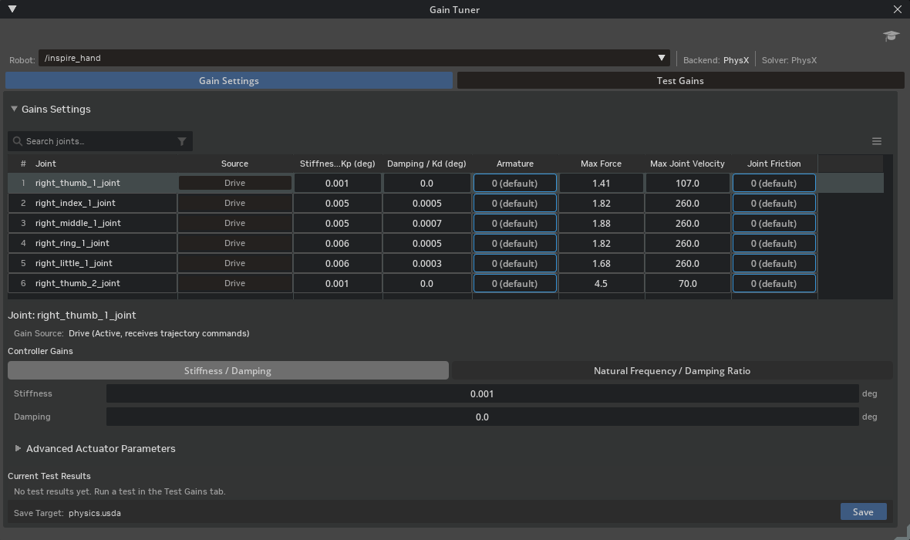
点击 Test Gains 选项卡，并将 Test Mode 设置为 Step Function。Gain Tuner 默认打开 Snap to Limits，只有在切换到 Step Function 或 Sinusoidal 后，才会显示 Test Duration (s) 字段。
在 Test Gains Settings 中，仅对这两个拇指关节选中 Test。

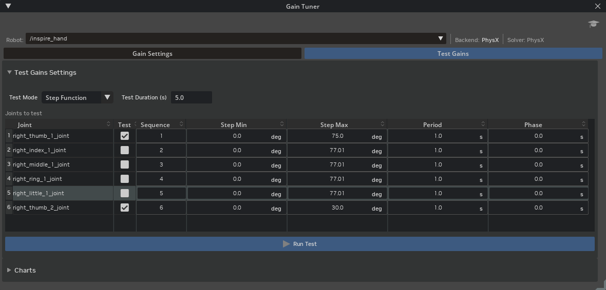
将
right_thumb_1_joint的 Step Max 设置为 60 degrees，将right_thumb_2_joint的 Step Max 设置为 20 degrees。将两个关节的 Period 设置为 2.0 秒，将 Test Duration (s) 设置为 6.0，这样每个关节将运行三个完整的阶跃周期，您可以观察其响应是否重复。
注意
周期必须足够长，以便每个关节有时间到达并稳定下来。right_thumb_1_joint 的 Max Joint Velocity 限制为每秒 107 度，因此 60 度的阶跃大约需要 0.6 秒的运动时间。在默认的 1.0 秒周期下，命令会在关节到位之前反转，响应永远不会显示下一节要求您消除的超调量。

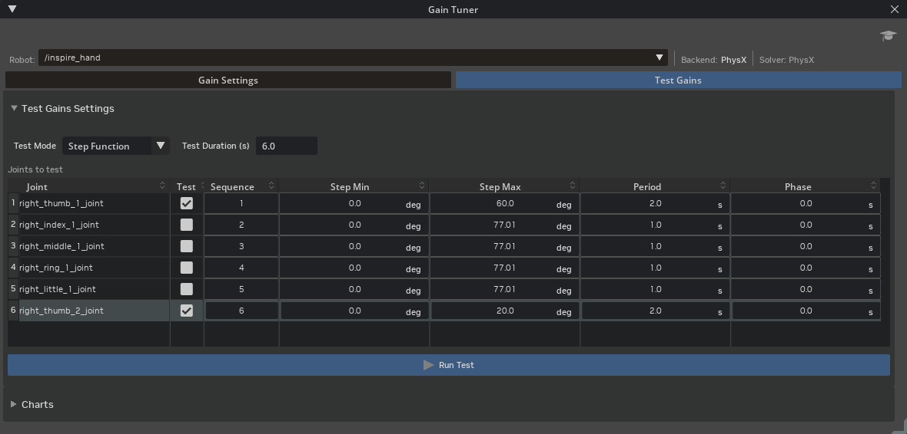
点击 Run Test。如果仿真尚未播放，Gain Tuner 会自动启动时间轴。

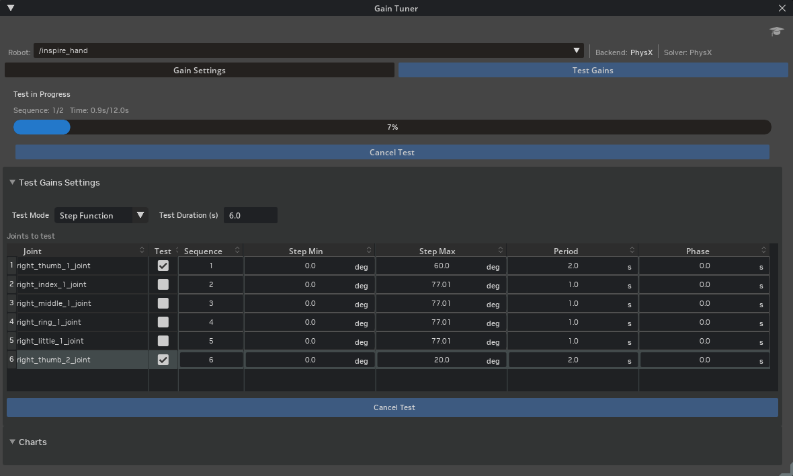
分析结果#
Test Gains 选项卡的 Charts 部分会绘制每个测试关节的指令 Position 和测量 Position，从而揭示超调、滞后以及关节间的耦合情况。当活动后端报告测量的关节力时，旁边会出现 Effort (Nm) 图表；Newton 后端不报告这些数据，因此在 Newton 下仅显示 Position 图表。
测试完成后，在图表左侧的关节列表中选择
right_thumb_1_joint和right_thumb_2_joint。按住 Ctrl 并点击以同时选中两者。每个关节都有一个与其图表轨迹颜色相匹配的颜色。

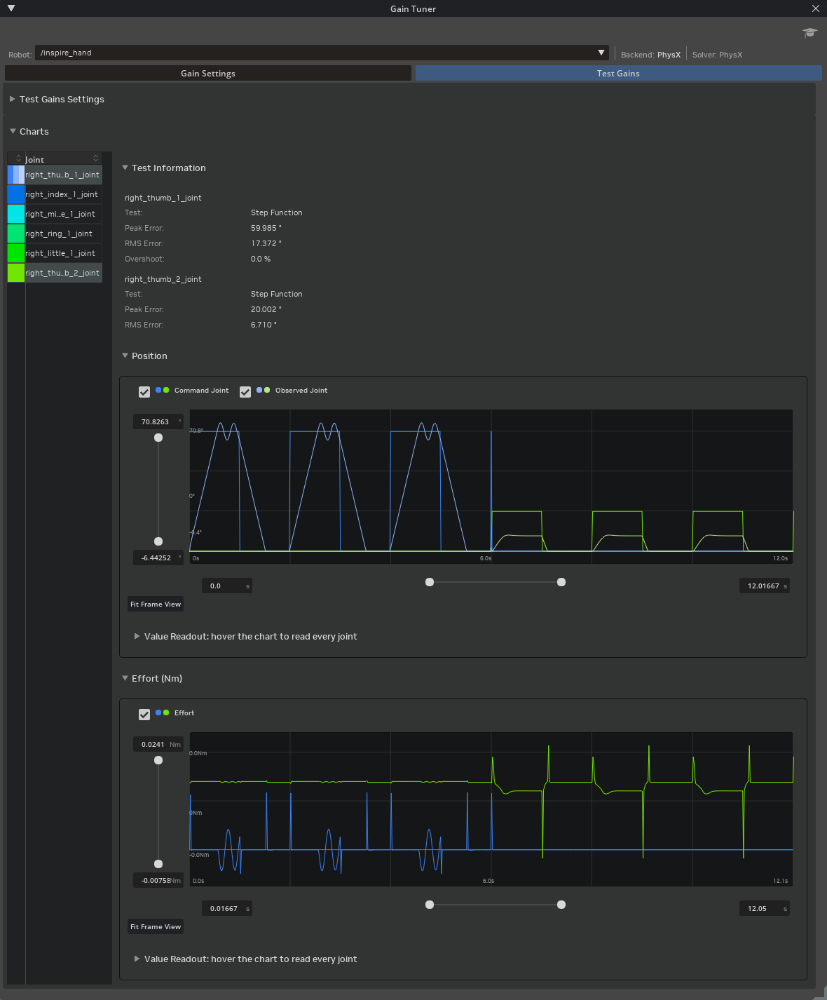
注意
尽管 right_thumb_1_joint 明显存在超调，但此处 Overshoot 显示为 0.0 %。该指标仅比较第一个和最后一个指令样本，并将中间部分视为单个步骤，这会被重复方波破坏：最终测量的是回落到零的过程，而不是超过 60 度的上升过程。请直接从图表中读取超调量，而不是依赖该字段。
如果第一个拇指关节发生振荡且第二个关节难以达到目标，请返回 Gain Settings，将两个拇指关节的阻尼设置为 0.0001，刚度设置为 0.007。再次点击 Run Test，然后返回 Gain Settings：表格下方的详细信息面板会显示该次运行的结果及其对应的增益。

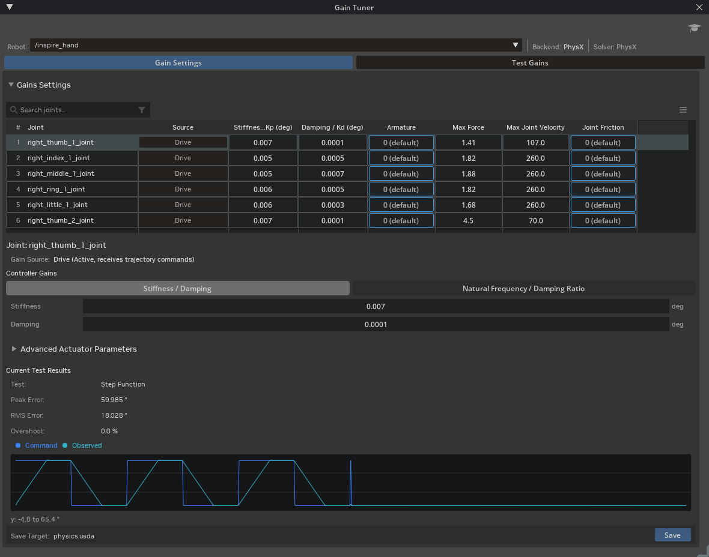
返回 Test Gains 选项卡，将两个关节的 Sequence 都设置为 1，以便它们并行运行。对于
right_thumb_2_joint，将 Step Min 设置为 0.0，将 Step Max 设置为 15。

再次点击 Run Test，然后在关节列表中选择两个拇指关节以比较响应。增加的阻尼消除了振铃现象，现在两个关节都能攀升至目标值并保持稳定。

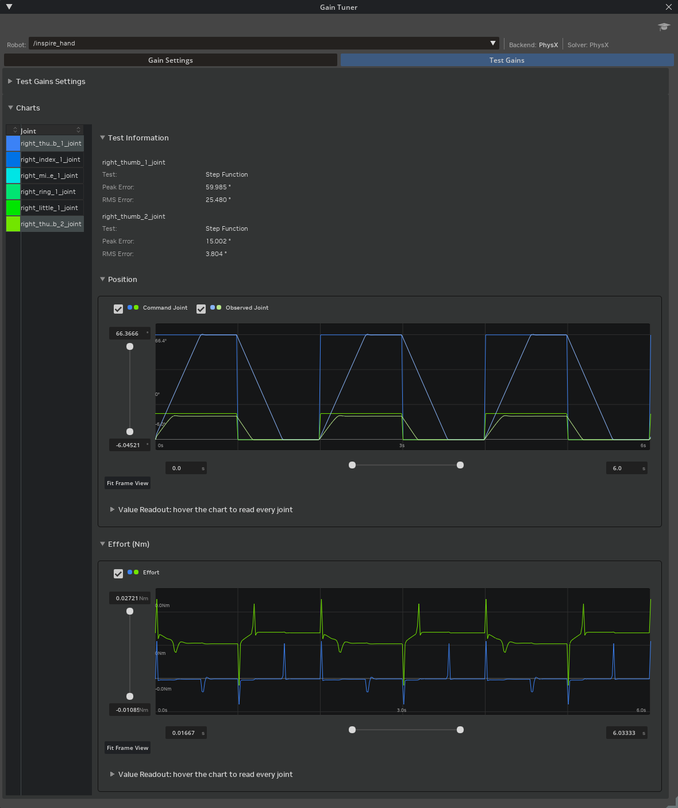
注意
请根据轨迹的形状来判断这一变化，因为报告中的数值无法区分振铃响应和稳定响应。Peak Error 是在指令阶跃发生的瞬间测量的，此时关节尚未有时间移动，因此无论关节后续的跟踪效果如何，该误差值始终接近阶跃幅度：在上述每次运行中，针对 60 度的阶跃，峰值误差均为 59.985 度。RMS Error 是对整个记录运行过程的平均值，包括关节未被驱动的序列。因此，双序列运行记录了 12 秒，每个拇指关节仅在其中一半时间内被驱动；而并行运行记录了 6 秒，两个关节在整个过程中均被驱动。两次运行的增益完全相同，但 right_thumb_1_joint 在第一次运行中报告为 18.028 度，在第二次运行中报告为 25.480 度。这一差异是平方根 2 的倍数，完全由平均窗口的变化引起，与其他因素无关。请仅在具有相同序列设置的运行之间比较 RMS Error。
验证调优后的手部#
继续调整刚度、阻尼和测试参数，直到拇指以极小或无超调的方式跟踪目标。使用以下额外的 Test Mode 条目来验证调优后的手部：
Snap to Limits 命令每个关节运动到其下限，保持目标位置，然后命令其运动到上限。使用此功能验证全范围跟踪以及限位、增益和碰撞几何体之间的一致性。
Stress 使用极端的随机命令驱动关节，并在 Stress Test Results 表中报告结果。在阶跃函数测试通过后运行此测试，以暴露求解器在激进探索（如强化学习）期间可能出现的数值不稳定问题。
在 Test Mode 中，选择 Snap to Limits，然后单击 Run Test。选择此模式会将阶跃函数字段替换为 Hold Duration 和 Tolerance。

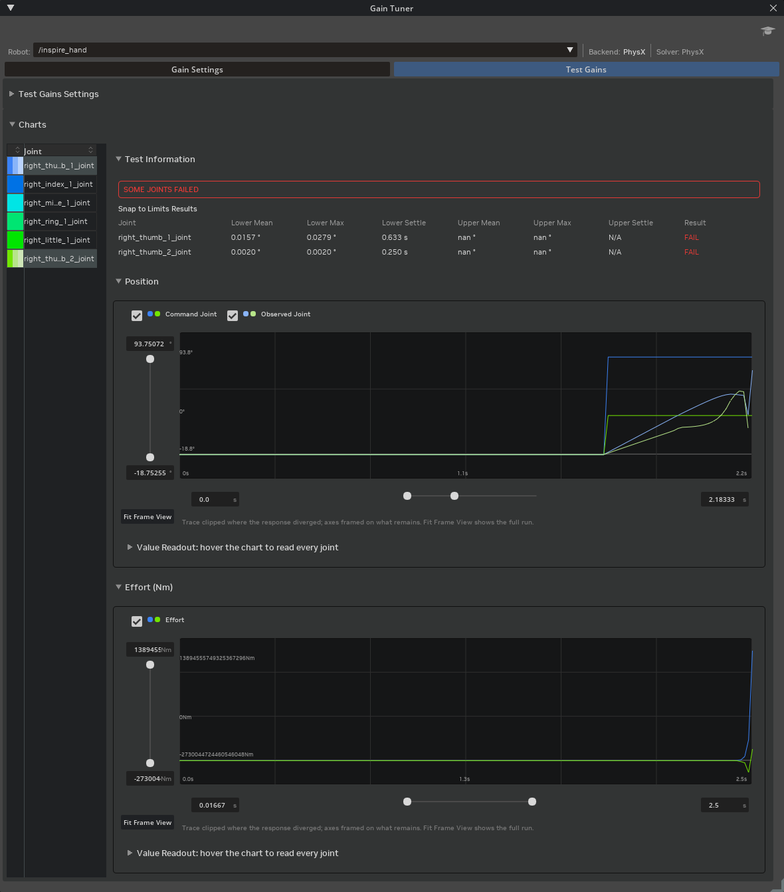
在更改任何内容之前先读取结果。上述运行出现发散而非跟踪失败：上限列报告
nan，且 Effort 图表峰值达到数十万牛顿米，这表明当拇指卷曲进入接触状态时，手部发生了爆炸性发散。在 Stage 面板中选择 PhysicsScene，并将 Scene > Time Steps Per Second 设置为 120，以便求解器在该接触过程中使用更小的时间步长。

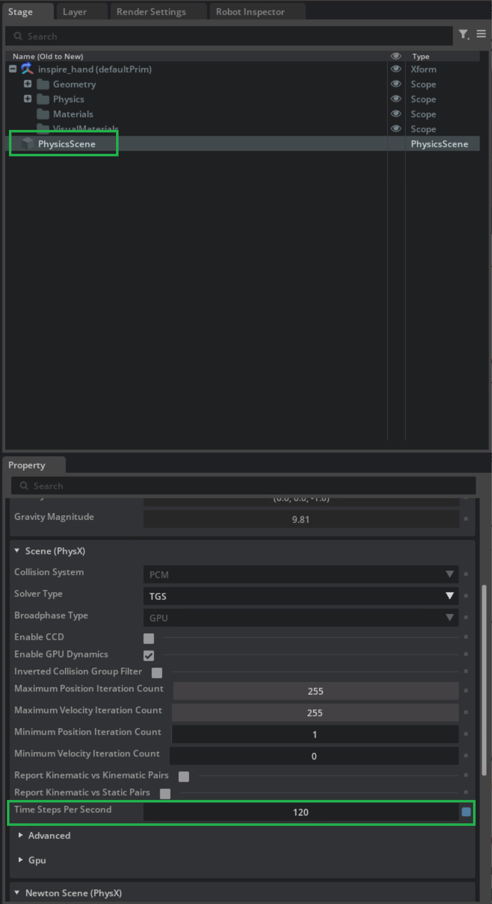
再次运行 Snap to Limits 测试。发散现象已消失：力矩保持在百分之几牛顿米范围内，且
right_thumb_1_joint现在通过了两个限位。

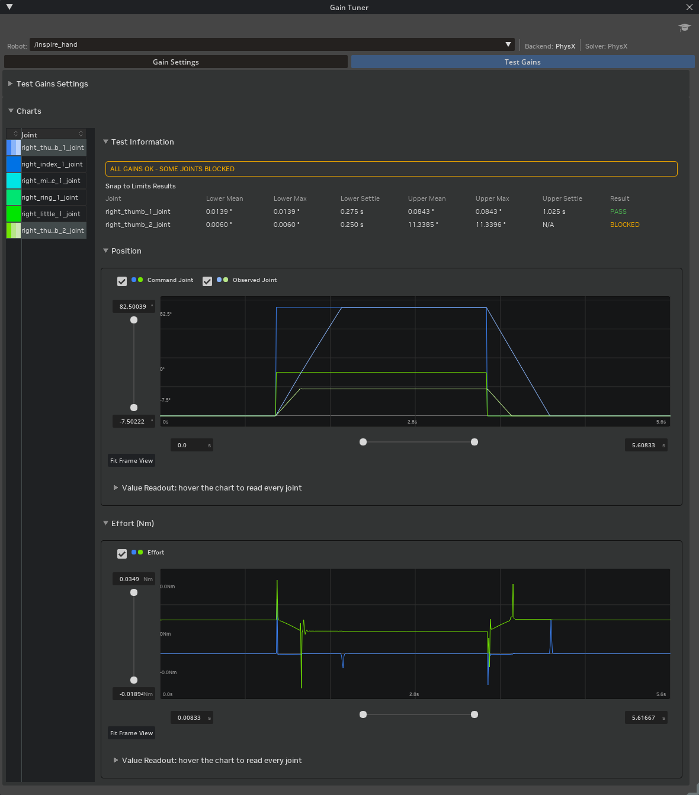
注意
较高的速率解决了发散问题，但并未解决取代它的 SOME JOINTS BLOCKED 判定结果。BLOCKED 报告指出，某个关节在未达到指令限位时便停滞，且其速度接近零，这表明存在自碰撞或其他物理约束，而非增益问题；其旁边的 ALL GAINS OK 显示增益调优器认为驱动器本身的跟踪表现是可接受的。right_thumb_2_joint 在距离上限 11.34 度处停止并保持在该位置，因此在调整速率后，剩余的问题属于几何结构问题，而非调优问题。
要测试整个手部：
为每个关节启用 Test。
将每个关节的 Sequence 设置为 1。
点击 Run Test。

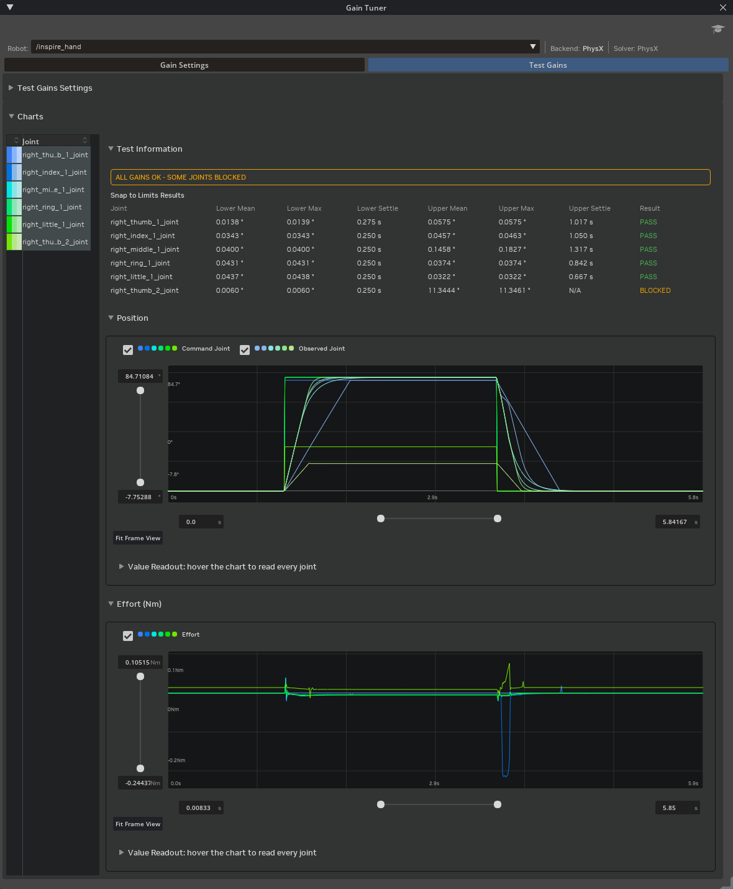
使用 Physics Inspector 指令各个关节在其全范围内运动：
前往 Tools > Physics > Physics Inspector。
选择
r_base_link作为 Articulation。设置驱动目标位置，并在视口中观察响应。
在指令目标位置之前，请设置非零刚度；否则，关节将不会响应。
增益调优器提供的功能超出了本教程的使用范围：Sinusoidal 和 dt Sweep 测试模式、针对每个后端的执行器高级参数，以及自然频率调优模式。有关这些功能，请参阅 Gain Tuner Extension。
保存调优后的增益#
编辑增益会更改内存中的 Stage。请在关闭 Stage 之前保存调优后的值，否则调优结果将丢失。
点击 Gain Settings 选项卡。
检查关节表下方的 Save Target 行。它默认设置为中性
payloads/Physics/physics.usda层，这是关节增益所属的位置。点击 Save。
有关完整的保存目标集，包括 MuJoCo 镜像和 Newton 执行器写回，请参阅 Save Targets and Backend Mirroring。
注意
在 Gain Tuner 中打开 Isaac/Samples/Rigging/Inspire/module_5_end/inspire_hand/inspire_hand.usda 以查看最终调优后的刚度和阻尼值。
总结#
本教程涵盖了：
在 Gain Tuner 的 Gain Settings 选项卡上调优拇指关节的刚度和阻尼。
从 Test Gains 选项卡运行 Step Function、Snap to Limits 和 Stress 测试，以诊断跟踪和稳定性。
并行测试所有关节，将调优后的增益保存到物理层，并查看最终调优后的检查点。
后续步骤#
继续前往 在实际操作中使用灵巧手，在下游工作流中使用调优后的手。